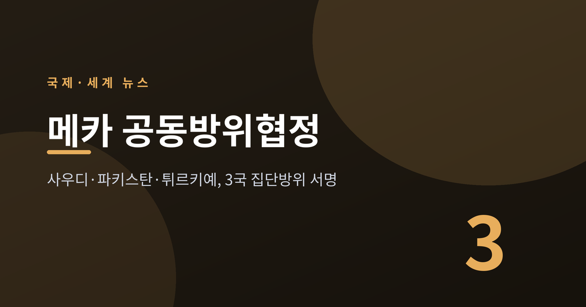
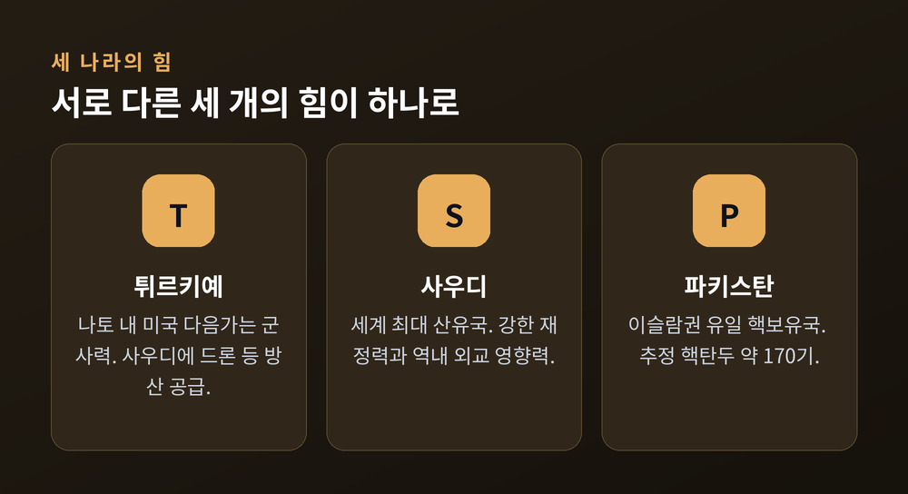
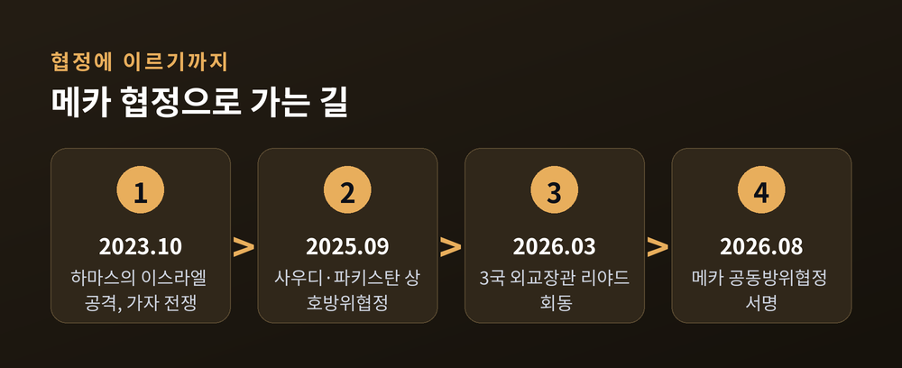
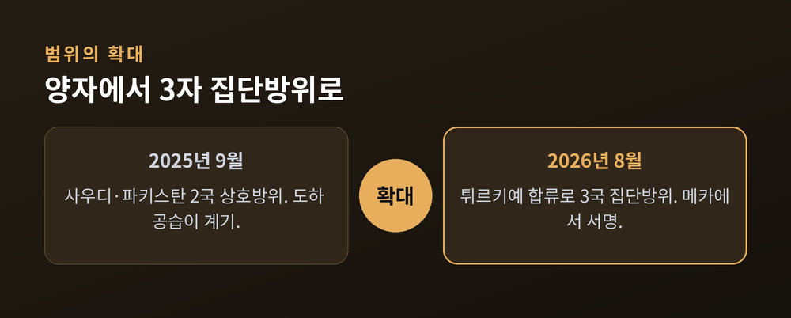
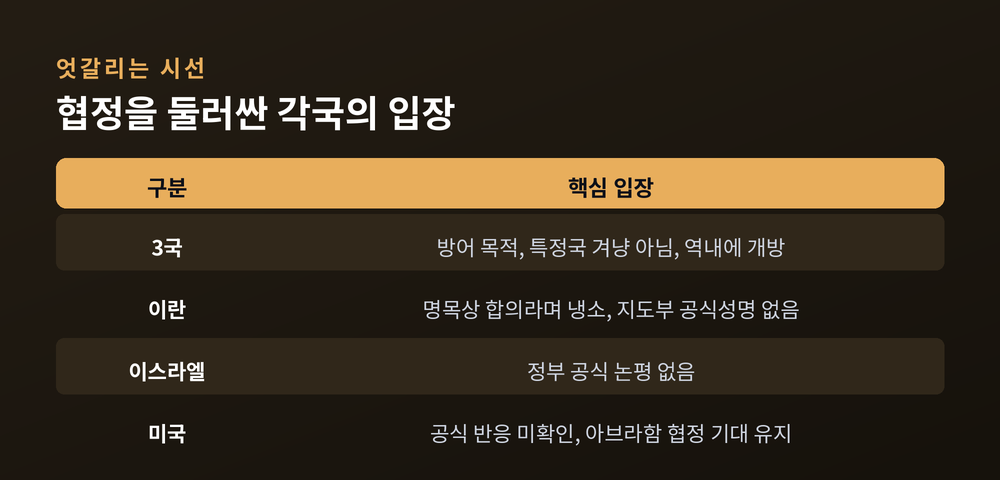
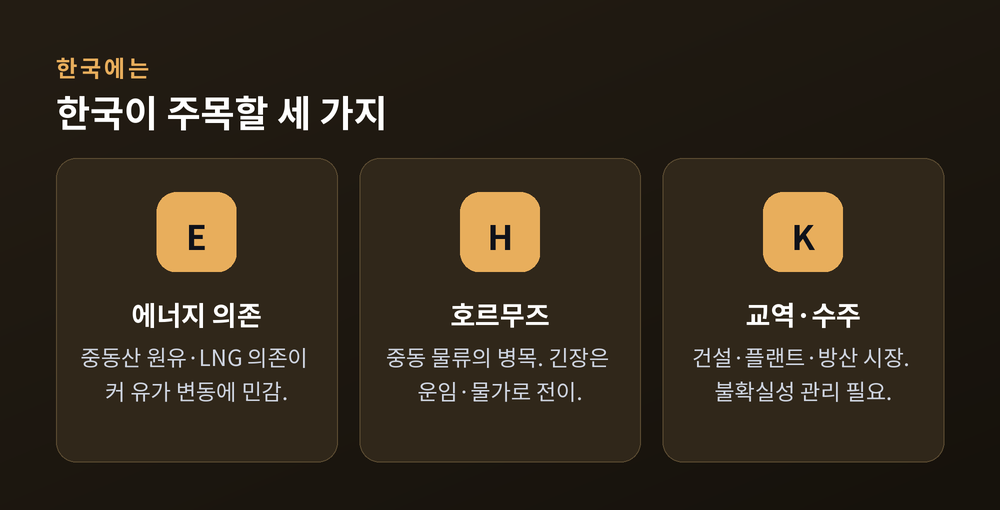

이번 글에서는 2026년 8월 사우디아라비아, 파키스탄, 튀르키예 세 나라가 메카에서 맺은 공동방위협정을 정리해 보겠습니다. 무슨 일이 있었는지, 왜 중요한지, 배경과 쟁점은 무엇인지, 앞으로 어떻게 될지 순서대로 살펴봅니다. 국제 정세를 다루는 만큼, 당사국들의 입장을 한쪽으로 기울지 않게 담으려 합니다.
메카에서 무슨 일이 있었나
2026년 8월 7일, 이슬람 최고 성지인 사우디 메카에서 세 정상이 한자리에 모였습니다.
레제프 타이이프 에르도안 튀르키예 대통령, 무함마드 빈 살만 사우디 왕세자 겸 총리, 셰바즈 샤리프 파키스탄 총리입니다.
이들이 서명한 문서의 이름은 '메카 공동방위협정'입니다.
핵심은 한 문장으로 요약됩니다. "세 나라 중 어느 한 곳에 대한 무력 공격을, 세 나라 모두에 대한 공격으로 간주한다."
각국의 외교·국방 장관도 자리를 함께했습니다. 즉흥적인 선언이 아니라 오래 준비된 조약이라는 뜻입니다.
이 조항은 북대서양조약기구, 곧 나토의 집단방위 원칙과 닮았습니다. 그래서 국내외 언론은 이 협정에 '중동판 나토'라는 별칭을 붙였습니다.
왜 이 협정이 중요한가
무게중심의 이동이 이 협정의 진짜 의미입니다.
예전에 걸프 산유국들의 안보는 미국이라는 한 축에 기대어 있었습니다. 지금은 그 축을 흔들며, 이슬람권 스스로 새로운 안보 틀을 짜기 시작했습니다.
세 나라가 가진 힘의 결이 서로 다르다는 점도 중요합니다.
튀르키예는 나토 안에서 미국 다음으로 큰 군사력을 지녔고, 사우디는 세계 최대 산유국입니다. 파키스탄은 이슬람 국가 가운데 유일한 핵보유국으로, 추정 핵탄두는 약 170기에 이릅니다.
군사력, 재정력, 그리고 핵 억지력. 성격이 다른 세 자산이 하나의 틀 안에 묶인 셈입니다.

물론 이 별칭을 그대로 받아들이기엔 조심스러운 면이 있습니다.
독일마셜펀드의 오즈구르 운루히사르즐리는 다르게 봅니다. 그는 이 협정을 "세 지역 강국 사이의 전략·군사·방산 협력의 틀"이라고 규정하며, 나토에 견줄 상호방위조약으로 보기는 어렵다고 지적했습니다.
'중동판 나토'라는 표현은 편리하지만, 실제 구속력은 아직 확정적으로 말하기 이릅니다.
주목할 대목은 외교적 무게입니다.
미국 애틀랜틱카운슬의 중동 전문가 앨리슨 마이너는 이렇게 분석합니다. 이란 전쟁 초기에 사우디는 파키스탄과의 협력을 지렛대 삼아 물밑 협상에 영향력을 행사했다는 것입니다. 그는 이 협정이 주는 외교적 지렛대가 실질적인 군사 협력보다 더 큰 영향을 미칠 수 있다고 봅니다.
튀르키예의 셈법도 분명합니다. 튀르키예의 한 학자는 앙카라가 이 서명으로 "어떤 유럽 동맹도 주지 못한 걸프와 남아시아에서의 공식적 영향력"을 얻었다고 평가했습니다.
세 나라가 각자의 이익을 안고 한 테이블에 앉았다는 사실. 그것이 이 협정을 단단하게 만드는 동력입니다.
왜 하필 지금인가
협정이 갑자기 튀어나온 것은 아닙니다.
세 나라는 이미 오래전부터 국방으로 얽혀 있었습니다. 파키스탄은 메카와 메디나 방어를 위해 병력을 주둔시켜 왔고, 튀르키예는 사우디에 무인기를 대규모로 팔아 왔습니다. 2022년부터는 공식 방산 포럼도 함께 운영했습니다.
협상 자체도 하루 이틀의 일이 아니었습니다. 물밑 논의는 2023년 10월 하마스의 이스라엘 공격 직후 시작돼, 2026년 이란 전쟁을 거치며 속도가 붙었습니다. 2026년 3월에는 세 나라 외교장관이 리야드의 이슬람 정상회의 계기에 만나 공동안보협정의 밑그림을 그렸습니다.
밑바탕이 다져진 상태에서, 정세가 방아쇠를 당겼습니다.
국내 보도를 종합하면, 2026년 2월 말 미국과 이스라엘의 이란 공습 이후 이란이 사우디를 비롯한 걸프 산유국에 미사일을 쏘았습니다. 이란의 지원을 받는 예멘 후티 반군은 사우디의 유조선과 국경 지역을 공격했습니다.
미군 자산이 자리한 사우디로서는, 위협이 눈앞의 현실이 된 것입니다.

한 발 앞선 사건도 있었습니다.
2025년 9월, 사우디와 파키스탄은 이미 양자 상호방위협정을 맺은 바 있습니다. 그 직접 계기는 같은 달 이스라엘의 카타르 도하 공습이었습니다.
이번 메카 협정은 그 양자 구도에 튀르키예를 더해 3자로 넓힌 결과입니다.

협정을 둘러싼 쟁점과 각국의 입장
민감한 사안인 만큼, 관련국의 목소리를 나란히 놓고 보겠습니다.
세 당사국은 방어가 목적이라고 강조합니다. 파키스탄 외무부는 "형제애와 이슬람 연대, 오랜 국방 협력"에 기반한 협정이라고 밝혔습니다. 튀르키예 측은 로이터에 "특정 국가를 겨냥한 것이 아니며, 다른 역내 국가에도 열려 있다"고 설명했습니다.
이란은 불편함을 감추지 않았습니다. 이란 의회의 한 위원회 대변인은 "명목상 합의는 안보를 가져다주지 않는다"며 사우디를 겨냥해 냉소적인 반응을 보였습니다. 다만 이란 지도부의 공식 성명은 나오지 않았습니다.
이스라엘 정부는 공식 논평을 내놓지 않았습니다. 과거 이스라엘 일각에서 이 흐름을 '반이스라엘 수니 축'으로 규정한 발언이 있었지만, 이는 개인 견해에 가깝습니다.
미국의 공식 반응 역시 이 시점까지 분명하게 확인되지 않았습니다. 다만 미국은 사우디가 이스라엘과 관계를 정상화하는 아브라함 협정에 서명하길 바라 왔고, 사우디는 팔레스타인 국가 수립의 길이 열리지 않으면 응하지 않겠다는 입장을 지켜 왔습니다.

핵심 쟁점이 하나 더 있습니다. 바로 '핵우산' 문제입니다.
2025년 협정 당시 사우디 고위 관계자는 "모든 군사적 수단을 포괄한다"고 말했습니다. 그러나 파키스탄 당국은 핵우산 제공이 포함되지 않았다고 거듭 강조해 왔습니다. 파키스탄의 핵무기가 세 나라에 확장 억지로 제공되는지는 공식적으로 확인되지 않았습니다.
단정하기 어려운 부분은 단정하지 않는 편이 옳다고 생각합니다.
한국에는 어떤 의미인가
멀리 떨어진 사건처럼 보이지만, 한국과 무관하지 않습니다.
한국은 원유와 액화천연가스 상당량을 중동에서 들여옵니다. 그 길목에는 호르무즈 해협이라는 좁은 통로가 있습니다. 중동의 긴장은 이 병목을 지나 유가와 해상운임, 그리고 물가로 번질 수 있습니다.

이 협정의 효과는 양면적입니다.
억지를 통해 긴장을 관리한다면, 중동 정세는 한동안 안정될 수 있습니다. 반대로 이란과의 대립 구도가 굳어진다면, 불확실성은 오히려 길어질 수 있습니다.
어느 쪽이든 한국에는 공급선을 다변화하고 위험을 관리해야 할 이유가 됩니다.
앞으로의 전망
협정이 3국에서 멈추지 않을 수 있다는 관측이 나옵니다.
파키스탄의 전직 고위 외교관은 2025년 협정 이후 튀르키예, 이집트, 카타르, 쿠웨이트가 잇달아 관심을 보였다고 전했습니다. 튀르키예 외교장관도 이집트의 참여 가능성을 언급했습니다.
만약 이집트 같은 나라가 합류한다면, 이란을 견제하는 새로운 안보축의 윤곽은 더 뚜렷해질 것입니다.
국제위기그룹의 한 연구자는 이 흐름을 이렇게 읽었습니다. 튀르키예, 파키스탄, 사우디, 이집트가 방위 협력을 넓히는 것은 "이웃의 안보를 미국·이스라엘과 이란의 경쟁에 맡겨둘 수 없다"는 인식이 무르익은 결과라는 것입니다. 다만 같은 움직임을 두고 '반이스라엘 블록'으로 규정하는 시각도 있어, 해석은 보는 자리에 따라 갈립니다.
다만 확장의 속도와 구속력은 아직 지켜봐야 합니다. 협정 전문과 세부 이행 조항은 공개된 범위가 제한적이기 때문입니다.
끝으로 한 가지만 짚겠습니다.
이번 협정의 본질은 무기의 총합이 아니라, "우리의 안보를 남의 손에만 맡기지 않겠다"는 선언에 가깝습니다.
중동의 오래된 질서가 조용히 다시 짜이고 있습니다. 그 변화가 어떤 그림으로 완성될지, 우리는 이제 막 첫 장을 넘긴 셈입니다.